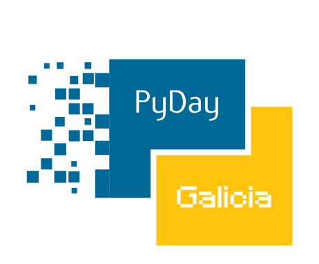

Iniciación a Python!
Github | https://github.com/Daniel-at-github/iniciacion_a_python_pyday_2017

Iniciación a Python!
Daniel Sánchez
2017-05-18
Quien soy
- Trayectoria
- ¿Por qués estoy aquí?
Python
Introducción

- Guido Van Rossum (Benevolent Dictator For Life)
- Fan de los Monty Python
- Lenguage interpretado de propósito general
- Python 1.0 liberado en enero de 1994
- Versión actual Python3, manteniendo Python 2.7
Características
- Centrado en:
- Recoge las mejores características de otros lenguages
- Facilidad de programacion
- Legibilidad
- Llama a lenguajes compilados si se necesita
- C
- Fortran
- Batteries included
- Comunidad
Impacto
- Instalado por defecto en Linux, FreeBSD y Mac
- Multitud de ámbitos: Desarrollo web, Admin de sistemas, ámbito científico, GIS, Análisis de datos, IA, ...
- Más de 100.000 paquetes en PyPI (Indexador de paquetes)
- Orientado a objetos
Instalación
Linux
python3 -V
# Si no está instalado
sudo apt install python3Windows
- En www.python.org/downloads/:
- Escoger python3
- Descargar Windows executable installer (64 bits)
- Instalar
Lenguage
Demo python3
- Invocación del intérprete
- Python
- Ipython
- Jupyter notebook
Paquetes
pip
pip install ipython # Instala ipython
pip install --upgrade ipython # Actualiza ipython a la última versión
pip freeze > requirements.txt # Guarda un listado de paquetes y versiones
pip uninstall ipython # Desinstala ipython
pip install --requirement requirements.txt # Instala los paquetesl del ficherovirtualenv
python3 -m venv <DIR>
source <DIR>/bin/activate
# Usar los paquetes, instalarlos, desinstalarlos
deactivate # Si queremos salir del entornovirtualenvwrapper
Linux
sudo apt get install virtualenvwrapper
# Salir y entrar de la consolaWindows
pip install virtualenvwrapper-wincomandos virtualenvwrapper
# Crear entorno
which python3
mkvirtualenv --python=/usr/bin/python3 test
pip install ipython
deactivate # salir
lsvirttualenv # listar
workon test # Activar el entorno test
...
deactivate
rmvirtualenv test # Para borrarlo no podemos estar dentroRecursos
Documentación
- Documentación oficial de Python
https://www.python.org/doc - Guı́a para principiantes
https://wiki.python.org/moin/BeginnersGuide - Learn Python (Español)
https://www.learnpython.org/es/ - Traducción del manual de Guido van Rossum
https://docs.python.org.ar/tutorial/pdfs/TutorialPython2.pdf - How to Think Like a Computer Scientist: Interactive Edition
Web
- Meetups:
- Videos de charlas: https://pyvideo.org (más de 7000)
- Resumen de sintaxis: https://learnxinyminutes.com
- Ejemplos de proyectos: https://newcoder.io
- Podcasts:
Atribuciones
Imágenes
{kind=link}
Software
- Markdownreveal (Diapositivas html)
- Jupyter notebook
- Ipython